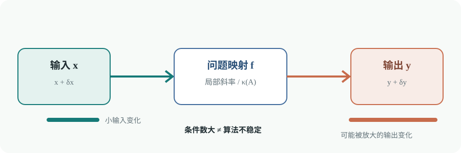

CHAPTER 1 · PERTURBATION THEORY AND CONDITION NUMBERS
输入误差如何放大：扰动理论与条件数
先判断问题是否敏感，再评价算法是否稳定。
测量数据、模型参数和上游计算都不可能无限精确。条件数描述输入发生微小变化时，正确答案可能改变多少；它描述问题本身的敏感程度，不是某个算法的速度或质量评分。
- 区分绝对条件数与相对条件数。
- 推导线性系统对 A、b 扰动的一阶误差界。
- 区分问题病态与算法不稳定。

1. 从一元函数看条件数
设要计算 y=f(x)，但输入只知道 x+δx。若 f 在 x 附近可微，一阶近似给出 δy≈f'(x)δx。绝对条件数 |f'(x)| 衡量输入绝对误差对输出绝对误差的影响。
若输入和输出都用相对误差衡量，则局部相对条件数为 |x f'(x)/f(x)|（要求 x 与 f(x) 非零）。它表示输入相对变化 1% 时，输出相对变化大约会达到多少倍。条件数依赖问题的尺度和误差度量。
2. 线性系统的条件数
对非奇异线性系统 Ax=b，矩阵条件数定义为 κ(A)=||A||·||A⁻¹||，范数必须前后一致。κ(A)≥1；κ(A) 越大，系统对相对输入扰动越敏感。2-范数条件数等于最大奇异值与最小奇异值之比。
若 A 固定而 b 改变，一阶相对误差界约为 ||δx||/||x||≤κ(A)||δb||/||b||。如果 A 与 b 都变化，在 κ(A)||δA||/||A||<1 的条件下，可以得到含分母 1−κ(A)||δA||/||A|| 的扰动上界。该界说明：矩阵本身的扰动也可能放大解误差。
3. 病态问题不等于算法写错
病态是问题本身对输入敏感；算法不稳定是计算过程把误差额外放大。一个稳定算法求解病态问题，仍可能得到相对误差较大的答案，因为输入本身的微小变化就足以改变正确解。相反，良态问题也可能被不稳定算法算坏。
例如两列几乎平行的矩阵，其最小奇异值很小，条件数很大。微小观测噪声就可能让解沿近似零空间方向大幅变化。换成更稳定的 QR 或 SVD 能避免额外的算法误差，却不能凭空恢复输入中不存在的信息。
4. 实际诊断顺序
先估计条件数，再检查残差和后向误差，最后结合模型误差判断解是否可信。若条件数很大，考虑重新缩放、增加观测、正则化或改变模型；若条件数适中但残差/后向误差很大，则要检查算法、实现、精度和数据路径。
条件数不是误差的精确预测。它给出局部敏感性尺度，实际误差还取决于扰动方向、数据分布和问题结构。不要只报告一个 κ 数值而不说明范数、尺度和计算目标。
交互检查：同样的输入误差会被放大多少？
选择条件数 κ，观察输入相对误差 10⁻⁶ 对输出的线性化影响。
κ=1：输入相对误差 10⁻⁶，输出相对误差的一阶估计也是 10⁻⁶。
参考资料
- James W. Demmel, Applied Numerical Linear Algebra, Chapter 1 §1.3.2conditioning
- Nicholas J. Higham, Accuracy and Stability of Numerical Algorithms, 2nd ed.condition and stability analysis
本页以独立教学语言解释数学与算法；原始教材用于定位主题，不复制原书段落或插图。